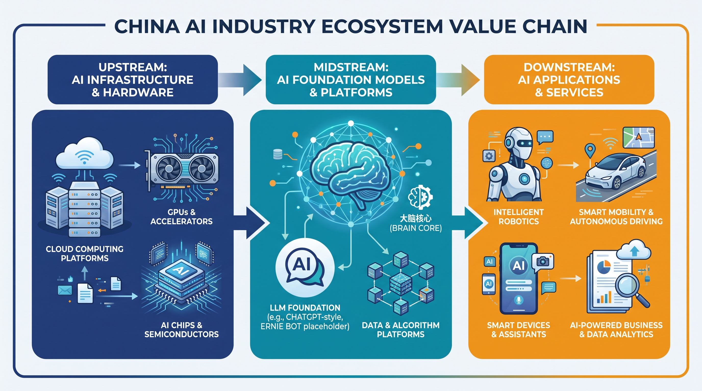
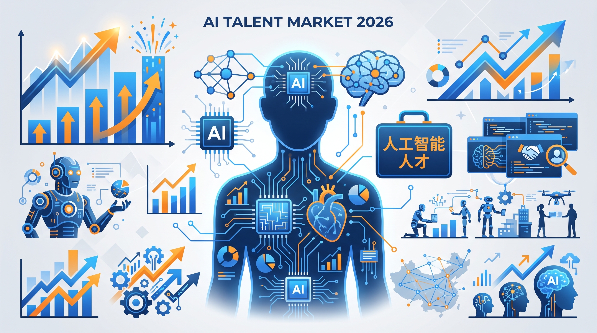

中国 LLM 人才市场深度报告
目录
1. 执行摘要
2026 H1 关键数据一览
2026 年上半年，中国 LLM（Large Language Model，大语言模型）人才市场呈现"井喷式"增长。一系列结构性变化已经发生：
- 岗位端：2026 年 1-4 月 AI 领域新发岗位量同比 +8.7 倍（脉脉口径），AI 占新经济整体岗位比重从 2025 年同期的 2.78% 跃升至 22.03%。
- 薪资端：AI 科学家/负责人平均月薪 132,796 元（断层领先，唯一破 10 万）；AI 整体平均月薪 62,850 元，比新经济行业高 26%。
- 紧缺端：高性能计算工程师供需比从 2025 年的 0.99 骤降至 0.26（4 岗抢 1 人）；AI 整体供需比 0.97（接近供需平衡但竞争温和）。
- 资本端：2026 年 5 月单周，DeepSeek（估值 450 亿美元）、月之暗面（20 亿美元）、阶跃星辰（25 亿美元）相继披露大额融资，合计 45 亿美元。
- 政策端：生成式 AI 服务累计备案数从 2025 年末的 748 款增长到 988 款（2026-06-30），半年净增 240 款。
2. 招聘市场：岗位量同比+8.7 倍
来源：脉脉《2026春招职场洞察报告》《2026年1-2月洞察》
2026 年开年招聘市场全面回暖，新经济行业整体岗位量同比 +22.6%，但 AI 赛道增速远超整体水平。
据脉脉高聘人才智库 2026 年 5 月发布的《2026春招职场洞察报告》：
- 2026 年 1-4 月，AI 领域岗位量同比 +8.7 倍（1-2 月口径为 +12 倍，因数据来源时点不同）
- AI 占新经济整体岗位比重：2025 年同期 2.78% → 2026 年 1-4 月平均 22.03%（1-2 月最高 26.23%）
- 具身智能赛道：岗位量同比 +15 倍，招聘指数从 2025 年的 36 跃升至 579
- AI 整体人才供需比 1.23（求职者略多于岗位），但细分方向如高性能计算工程师（0.26）、SLAM 算法（0.21）、规控算法（0.23）极度紧缺
3. 薪资水位：AI 科学家断层 13 万/月
来源：脉脉《2026春招职场洞察报告》、前程无忧《2026届校招市场AI人才需求报告》
2026 年 AI 行业薪资持续创新高，但内部分化加剧。
2026 春招高薪岗位 TOP5：
- AI 科学家/负责人：132,796 元/月（断层领先，唯一破 10 万）
- 算法研究员：74,441 元/月
- AI infra：73,702 元/月（高于大模型算法）
- 大模型算法：71,534 元/月
- AIGC 算法工程师：约 70,000 元/月
2026 校招（51job）：大模型算法工程师以 24,760 元/月的中位薪酬领跑；AI 测试工程师（13,621 元）和 AI 数据训练师（8,513 元）与核心技术岗差距显著。
4. 资本与 IPO：六小虎的生死竞速
来源：晚点LatePost、华峰资本、新民晚报、南都、上海证券报、金融时报
2026 H1 是中国 LLM 行业的"资本竞速"期。短短一周内（2026 年 5 月 6-8 日），三大头部公司相继披露重大融资：
- DeepSeek（5 月 6 日）：启动首轮外部融资，国家集成电路产业投资基金（大基金）洽谈领投，估值约 450 亿美元。腾讯、阿里亦洽谈参与。梁文锋从"不接受外部融资"转向"开门迎客"，标志着 DeepSeek 从开源异端向国家战略核心的角色转变。
- 月之暗面（5 月 7 日）：完成约 20 亿美元融资，投后估值超 200 亿美元。美团龙珠领投，水木资本、中国移动、CPE 源峰参投。4 月 ARR（年度经常性收入）超 2 亿美元。不到半年完成 4 轮融资，估值较 2025 年 11 月翻超 4 倍。
- 阶跃星辰（5 月 8 日）：将完成近 25 亿美元融资，估值约 100 亿美元。产业链资本集中入场（华勤、龙旗、豪威、中兴），已拆除红筹结构加速赴港 IPO。"港版淡马锡"HKIC 入股。
IPO 进展：智谱（2026-01-09 港交所挂牌，市值一度 >500 亿港元）、MiniMax（2026-01-08 港交所挂牌，市值一度 >700 亿港元）已完成港股上市；阶跃星辰成为第三个冲刺港股的大模型公司。DeepSeek、月之暗面、零一万物、百川智能虽未明确 IPO 时间表，但已具备公开市场条件。
战略分化：月之暗面走"技术 + 资本双向循环"路线（K2.5/K2.6 高频迭代驱动 ARR 增长，反哺人才和算力）；阶跃星辰走"产业捆绑"路线（与华勤/中兴/豪威深度绑定，押注终端 AI）；DeepSeek 走"国家战略核心"路线（大基金入场 + 算力国产化）。三条路径的合理性与长期回报，尚需时间检验。

5. 政策环境：备案数破 988 款
来源：国家互联网信息办公室
生成式 AI 服务的合规化进程持续加速。2023 年 8 月《生成式人工智能服务管理暂行办法》施行以来，累计备案数已从 2024 年末的 302 款增长到 2026 年 6 月 30 日的 988 款，加上应用/功能登记的 598 款，合计 1,586 款。
2026 H1 备案节奏：
- 1-2 月：新增 48 款备案 + 46 款登记（累计 796 款 + 481 款）
- 3-4 月：新增 72 款 + 49 款（累计 868 款 + 530 款）
- 5-6 月：新增 120 款 + 68 款（累计 988 款 + 598 款）
区域扩散特征：2026 年 1-2 月备案覆盖全国 16 个省级行政区，新疆、西藏、青海、云南等地首次通过备案（实现"零的突破"）。备案主体从大型企业扩展到中小企业（占 50%）、高校/科研机构（12.5%）、中央企业（31.25%）。
地方补贴：北京通州区、亦庄开发区，广州天河区、海珠区、黄埔区，深圳龙华区，浙江嘉兴、杭州、宁波及福建等地均推出专项扶持政策，补贴金额 50-200 万元。政策有效期多至 2027 年底。
6. 城市分布：北京 30%、杭州 28%
来源：脉脉《2026春招职场洞察报告》
AI 岗位的城市集中度进一步提高。2026 年 1-4 月，北京新发 AI 岗位渗透率达 30.17%（即每 10 个新发岗位中有 3 个是 AI 相关），位列全国第一。杭州以 28.54% 紧随其后，超过上海（24.31%）和深圳（19.22%）。
杭州的崛起与"杭州六小龙"（DeepSeek、宇树科技、游戏科学、群核科技、云深处科技、强脑科技）的产业集群效应密切相关。2026 年 1 月起，杭州连续承接了多场 AI 专场招聘会，岗位供给端出现明显放量。
热招城市 TOP4：北京、上海、深圳、杭州（顺序与渗透率不同，反映存量 + 增量需求）。
7. 头部公司格局：大厂 vs 六小虎 vs 杭州六小龙
来源：脉脉、晚点LatePost、36氪、新民晚报
2026 春招头部公司招聘排名：字节跳动断层第一，大疆跃居第二（首次超越小红书），小红书第三。腾讯、美团、蚂蚁集团、京东、阿里、拼多多等巨头持续位居前列。MiniMax、追觅也进入热招 TOP20。
2026 Q1 招聘量同比涨幅 TOP 公司：
- 自变量机器人：+831.88%（具身智能）
- 大疆：+646.31%（智能硬件）
- 阶跃星辰：+557.84%（大模型）
- 道通智能航空：+408.51%（低空经济）
- 面壁智能：+264.29%（大模型）
- 智元创新：+209.02%（具身智能）
- MiniMax：+218.02%（大模型）
AI 渗透率（公司层面）：面壁智能 67.97%、国信普惠 64.11%、国电通 61.41%、京东数科 53.00%、阿里云 52.09%、智谱 50.54%、阶跃星辰 48.14%、DeepSeek 47.42%。新发岗位 AI 渗透率 >50% 的企业已达 8 家。AI 人才争夺已从"互联网 + 科技"扩展到"电力 + 金融 + 电商 + 智驾 + 具身智能"的"跨界混战"。
8. 人才结构变化：去初级化、AI 工具普及
来源：脉脉《2026春招职场洞察报告》《2026年1-2月洞察》
2026 H1 的人才市场出现了明显的"结构性位移"：
- 去初级化：3 年以上经验要求的岗位占比达 73.34%，1 年以内经验岗位同比 -20%，3-5 年经验岗位量同比 +19%（增幅最大）。
- AI 工具普及化：95.11% 的新经济人才都在使用 AI 工具，38.51% 的程序员所在公司已把 AI 能力纳入绩效考核。54% 的程序员所在公司过去一年发生过岗位优化。
- 大厂 AI 渗透：万人以上企业 70.3% 提供免费或自研 AI 工具，500 人以下企业仅 42.5%。
- Agent 工具崛起：编程 Agent 和自主执行型 Agent 的选择比例合计达 34.07%，16.14% 使用自主执行型 Agent 工具（"养虾"现象）。63.24% 的 AI 使用者不清楚自己每天的 Token 消耗量，2.05% 重度用户日消耗 >1000 万 Token。
- 企业招聘偏好：看重"数学与算法基础"的占 60.3%，看重"实际项目/实习或竞赛经历"的占 52.5%，"精通当前热门技术"占 34.6%，"软硬件协同开发经验"占 30.7%，名校学历仅 28.8%（排第 5）。
9. 展望：Agent 元年 + 具身智能起势
基于现有公开数据的事实性趋势判断
从 2026 H1 的数据来看，三个结构性趋势已经显现：
- Agent 元年：脉脉创始人林凡明确提出"2026 年是 Agent 大年"。编程 Agent（Cursor / Claude Code）和自主执行型 Agent（Manus / OpenClaw）已在 B 端企业大规模铺开。产品、市场、运营等非技术岗的 Agent 使用率已接近 20%。
- 具身智能规模化：岗位量同比 +15 倍，平均月薪从 5.87 万升至 6.16 万。宇树科技、自变量机器人、智元创新等企业进入快速扩招期。2026 年 7 月阶跃星辰发布 AI 智能体手机 STEPX Neo，标志着"AI Native 终端"的探索正式开始。
- AI infra 价值重估：AI infra 岗位薪资（73,702 元）已超过大模型算法（71,534 元），高性能计算工程师供需比 0.26（4 岗抢 1 人）。算力国产化 + 大模型工程化背景下，"底层支撑岗"的紧缺度将持续上升。
本报告基于截至 2026 年 7 月的公开数据，不对未来薪资或岗位增长做主观预测，仅做事实性总结。

10. 数据来源附录
本报告所有数据点均来自以下公开来源
- 脉脉高聘人才智库《2026春招职场洞察报告》（2026-05-13）—
nbd.com.cn/articles/2026-05-14/4391595.html - 脉脉高聘人才智库《2026年1-2月中高端人才求职招聘洞察》（2026-03-09）
- 脉脉高聘人才智库《2025年度人才迁徙报告》
- BOSS直聘《2026人才趋势报告》ECHO2026（2026-01-22）
- 智联招聘+北大国发院《AI大模型对我国劳动力市场潜在影响研究：2024》
- 智联招聘《2025年春招市场行业周报（第一期）》
- 智联招聘《中国企业招聘薪酬报告》
- 前程无忧 51job《2026届校招市场AI人才需求报告》（2025-08-25）
- 国家互联网信息办公室《2025年生成式AI服务已备案信息》+ 2026 年历次公示
- 晚点LatePost（2026-05 月之暗面融资报道）
- 华峰资本（2026-05 月之暗面融资公告）
- 新民晚报/南都（2026-05 阶跃星辰融资报道）
- 上海证券报/金融时报（2026-05 DeepSeek 融资报道）
- 信通院《人工智能发展报告（2024年）》
- 锐仕方达《2025年生成式人工智能薪酬报告》
- 薪智《2025年Q2人工智能行业薪酬报告》
报告生成：2026-07-26。所有数据点可在 data/*.json 中查阅原始数据。